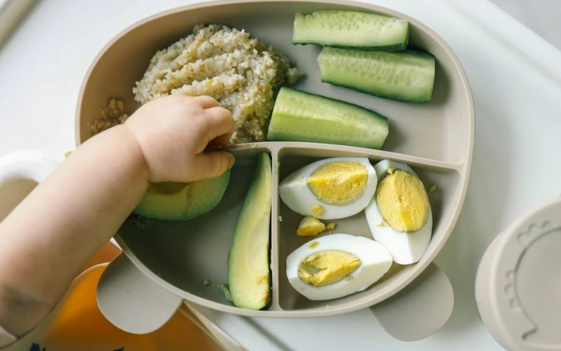
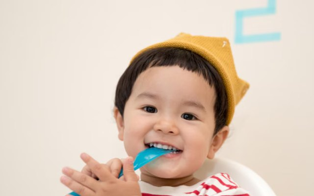

About
I develop statistical methods that help researchers draw reliable conclusions from real-world health data, so public health decisions rest on trustworthy evidence.
Health research increasingly rely on observational (non-randomised) studies to answer important questions about population health, but their results can be distorted by missing data, differences between the groups being compared, and other sources of bias. I develop methods, tools and practical guidance to address these challenges, with a focus on drawing reliable conclusions about cause and effect. My collaborations at Murdoch Children’s Research Institute in transgender health, social epidemiology, and population allergy shape the methods I develop.
Selected publications
Methods research
-
Multiple imputation for longitudinal data: a tutorial
A practical guide to handling missing data in studies that follow people over time, with a worked example researchers can learn from.
-
Roadmap for analysing multiple biases in causal inference
A step-by-step approach for identifying the biases that could affect a study, such as unmeasured confounding and measurement error, and correcting for them together in a single analysis.
American Journal of Epidemiology -
The ideal trial
Guidance on defining causal questions that balance relevance to decision-making with feasibility of estimation using the available data, within the target trial framework.
Epidemiology -
Multiple imputation of three-level data
A comparison of approaches for handling missing data when measurements are clustered at several levels, such as repeated measures on children within schools.
BMC Medical Research Methodology
Health research
-
Egg allergy before and after guidelines for earlier egg introduction
The first real-world evidence from the general population that earlier egg introduction, as now recommended in infant feeding guidelines, has reduced egg allergy in childhood. We used causal analysis of two population cohorts recruited before and after the guidelines changed.
Highlighted in an accompanying editorial and covered by 31 news outlets, including TIME and CNN. -
Racial discrimination and health inequities among Aboriginal and Torres Strait Islander children
A causal mediation study showing that preventing interpersonal racial discrimination could substantially reduce socioeconomic inequities in children's mental health and sleep problems, with findings replicated across two independent cohorts.
Featured in the Lowitja Institute's position paper on racism and child health, and cited by the RACGP in its call for all Australian governments to take stronger action on racism. -
Antibody trends and outgrowing peanut allergy
The first population-based study to link changes in antibody levels over time to whether children outgrow peanut allergy. A single test at diagnosis predicted this poorly, but trends over time tracked which children's allergy resolved.
Featured in 28 news outlets and informed the European Academy of Allergy and Clinical Immunology guidelines on managing IgE-mediated allergy.
Research in the media
News coverage of studies I contributed to as a biostatistician.
- TIME TIME · Jun 2026Feeding kids eggs early in life helps prevent food allergy, new study says
-

CNN CNN · Jun 2026Childhood egg allergies fall as early introduction becomes more common, new study finds - NIT National Indigenous Times · Feb 2026GPs peak body welcomes federal investment in Indigenous health, urges nationwide action to confront racism
-

ABC ABC Radio Melbourne · Jul 2023Research indicates kids with food allergies are more likely to develop asthma
Resources
-
Code: multiple imputation for longitudinal data
A reproducible example accompanying my tutorial paper, with a simulated dataset and code that researchers can use to learn the methods.
Code · GitHub -
Statistical analysis plan template for observational studies
A template for planning analyses in observational studies, with separate sections for descriptive, predictive and causal questions. Co-developed with the Causal team to strengthen study quality.
Template · Word document -
Short course: observational studies – modern concepts and analytic methods
Covers how to approach descriptive, predictive and causal research questions, including using the target trial framework to define causal questions and causal diagrams to identify key sources of bias. Taught online twice a year by the Causal team.
Short course · MCRI
Equity & women in data science
I'm committed to making statistics and data science more inclusive, particularly for women and early-career researchers.
- Co-author of Women of Significance?, a Significance magazine article on women's representation in statistics
- Founding member of the Statistical Society of Australia's Equity, Diversity & Inclusion Committee (2021–2023) and co-author of its EDI survey report, which informed changes to the Society's governance
- Speaker on careers in biostatistics and women in STEMRising WiDS Stars, Australia · WiDS Sri Lanka · International Society for Clinical Biostatistics
- Mentor to students and early-career statisticiansStatistical Society of Australia · ScholarX, Sri Lanka
I'm happy to speak at events on careers in biostatistics and diversity in data science. Get in touch ↓
Curriculum vitae
Get in touch
I'm always happy to hear from researchers interested in collaborating, students looking for mentoring or supervision, event organisers looking for a speaker, and anyone who'd like to talk about causal inference or missing data.